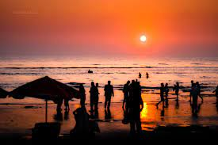
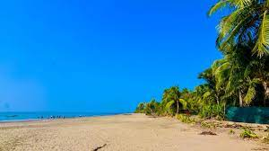

Cox's Bazar is a city, fishing port, tourism center, and district headquarters in southeastern Bangladesh. It is famous mostly for its long natural sandy beach, and it is infamous for the largest refugee camp in the world. It is located 150 km (93 mi) south of the divisional headquarter city of Chittagong. Cox's Bazar is also known by the name Panowa, which translates literally as "yellow flower". Another old name was "Palongkee".
Saint Martin’s, the one and only coral island of Bangladesh, is a small island measuring eight square kilometers. The visible landmass sinks during the tide. Alternatively called the pearl of the sea, it is about 10 km from the mainland at teknaf. The safest means of transport is the government-owned ferry which takes around two hours one way. Tourists have the option to spend a few hours and return the same day or stay for one or two days. Due to ferry’s timing, one and a half days tour is practical. Relaxation and fun on the picturesque place of blue sky and coconut trees, swimming in crystal blue water, snorkeling in the lagoon, and walking in the fresh air will be a lifetime experience. The seafood with its variety and taste has an appeal. There are a good number of hotels, guest houses, and eateries. There are a scuba diving facility and a sea turtle hatchery. Since it is a small island one can tour the entire area on foot in a few hours. The permanent residents of the island, numbering around 8,000, are all fishermen.
